Flocks, herds, and schools: a distributed behavioral model
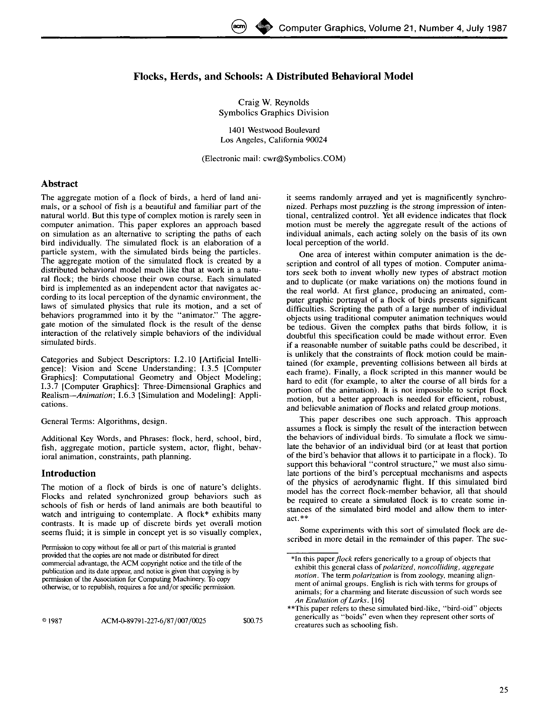
| Architecture Type | Distributed Agent-Based Model |
|---|---|
| Key Innovation | Emergent group behavior through simple local steering rules: Separation, Alignment, Cohesion. |
| Performance Metric | First model to produce lifelike flocking behavior in computer graphics; standard for agent-based simulations. |
| Computational Efficiency | Localized interactions allow for large-scale simulations with high frame rates. |
| Venue | International Conference on Computer Graphics and Interactive Techniques |
| Year | 1987 |
| Citations | 10538 |
| DOI | Link |
Craig Reynolds' 1987 paper, 'Flocks, Herds, and Schools: A Distributed Behavioral Model,' introduced the 'boids' model, a groundbreaking approach to simulating collective motion in computer graphics. By breaking down complex group behavior into three simple local rules—separation, alignment, and cohesion—Reynolds demonstrated that lifelike aggregate motion could emerge from the interactions of individual agents without a centralized leader. This model revolutionized character animation and found applications across diverse fields, including biological modeling, robotics, and artificial life.
The Distributed Behavioral Model
Before Reynolds' work, animating groups of creatures often relied on scripted paths or global controllers, which lacked the organic feel of natural flocks. Reynolds proposed a distributed model where each 'boid' (a simulated bird-like object) makes its own steering decisions based on its immediate neighbors.
This approach shifts the complexity from the group level to the interaction level, allowing for emergent behaviors that are both dynamic and realistic. The model assumes that each agent has access to limited information about the positions and velocities of nearby boids, rather than a global view of the entire flock.
The Three Fundamental Steering Rules
The core of the boids model consists of three simple steering behaviors that are applied to each agent at every time step:
1. **separation**: Steer to avoid crowding or colliding with nearby flockmates. This ensures that agents maintain a safe personal space. 2. **alignment**: Steer towards the average heading of nearby flockmates. This rule synchronizes the velocity and direction of the group. 3. **cohesion**: Steer to move towards the average position (center of mass) of nearby flockmates. This keeps the flock together as a cohesive unit.
Together, these rules balance the competing needs for individual safety, group synchronization, and collective unity.
Neighborhood and Perception
A critical aspect of the boids model is the concept of a 'neighborhood.' A boid only reacts to flockmates within a certain distance and angle, simulating a natural field of vision and perception. This localization is what makes the model 'distributed' rather than 'centralized.'
If the neighborhood is too small, the flock may break apart into isolated individuals. If it is too large, the boids may become overwhelmed by distant information, leading to sluggish or unrealistic motion. Modern implementations often use spatial partitioning (like quadtrees or grids) to efficiently identify neighbors in large-scale simulations.
Impact on Computer Graphics and Science
The boids model had an immediate and lasting impact on the field of computer graphics, most notably in the animation of massive battle scenes and wildlife in films like *Batman Returns* and *The Lion King*. Beyond entertainment, the model provided a foundation for the study of self-organizing systems in biology and physics.
In robotics, the principles of flocking are used to coordinate swarms of autonomous drones and underwater vehicles. In social science, similar models help explain human crowd dynamics and the spread of information through social networks. Reynolds' work remains one of the most cited and influential papers in the history of SIGGRAPH.
Concept Breakdown
A simulated bird-like agent that follows local rules to achieve complex group behavior.
A steering behavior that prevents agents from colliding by applying a repulsive force from nearby neighbors.
A steering behavior that matches an agent's velocity with its neighbors, ensuring uniform flock movement.
A steering behavior that pulls agents toward the center of their local neighborhood, maintaining group unity.
The process where complex, large-scale patterns arise from the simple, local interactions of individual components.
Mathematics
Steering Force Vector
| Symbol | Meaning |
|---|---|
| $\vec{F}_{steering}$ | The resulting steering force vector |
| $\vec{v}_{desired}$ | The target velocity according to the flocking rules |
| $\vec{v}_{current}$ | The current velocity of the boid |
Cohesion Rule (Center of Mass)
| Symbol | Meaning |
|---|---|
| $\vec{C}$ | The center of mass of the local neighborhood |
| $\vec{p}_i$ | The position of the i-th neighbor |
| $N$ | The number of neighbors in the perception radius |
Figures and Explanations
Visual demonstration of the three boids rules showing how individual force vectors combine to produce complex flocking patterns.
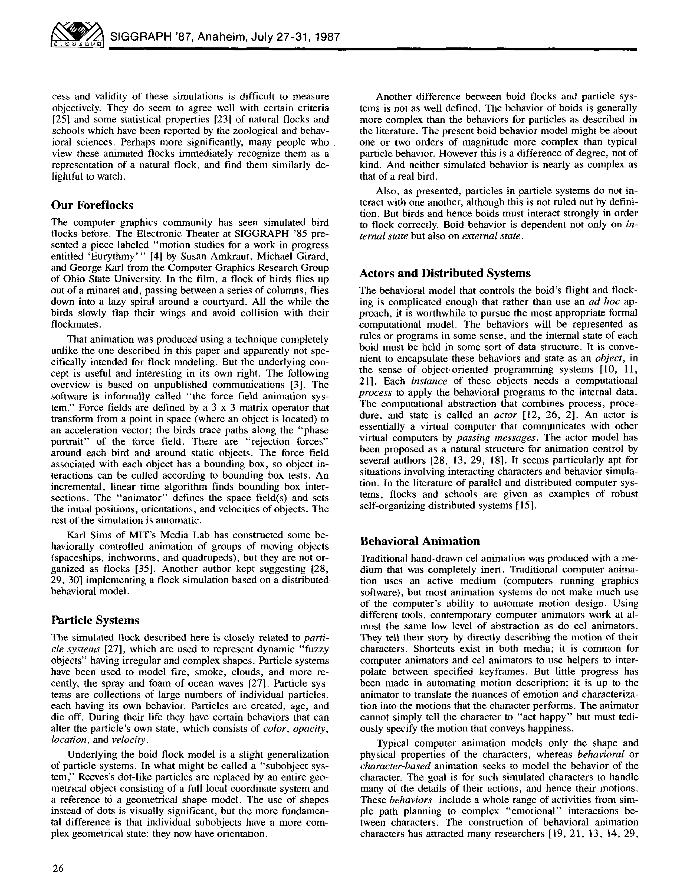
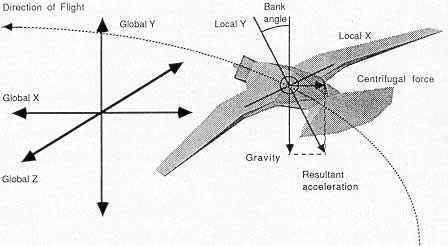
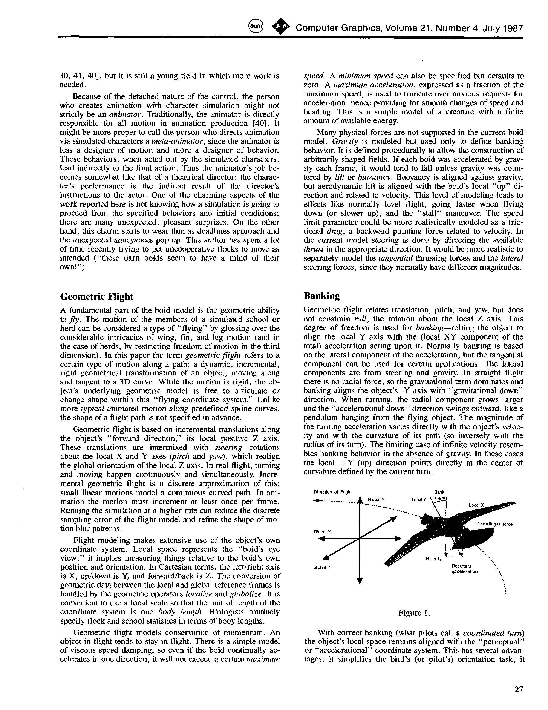
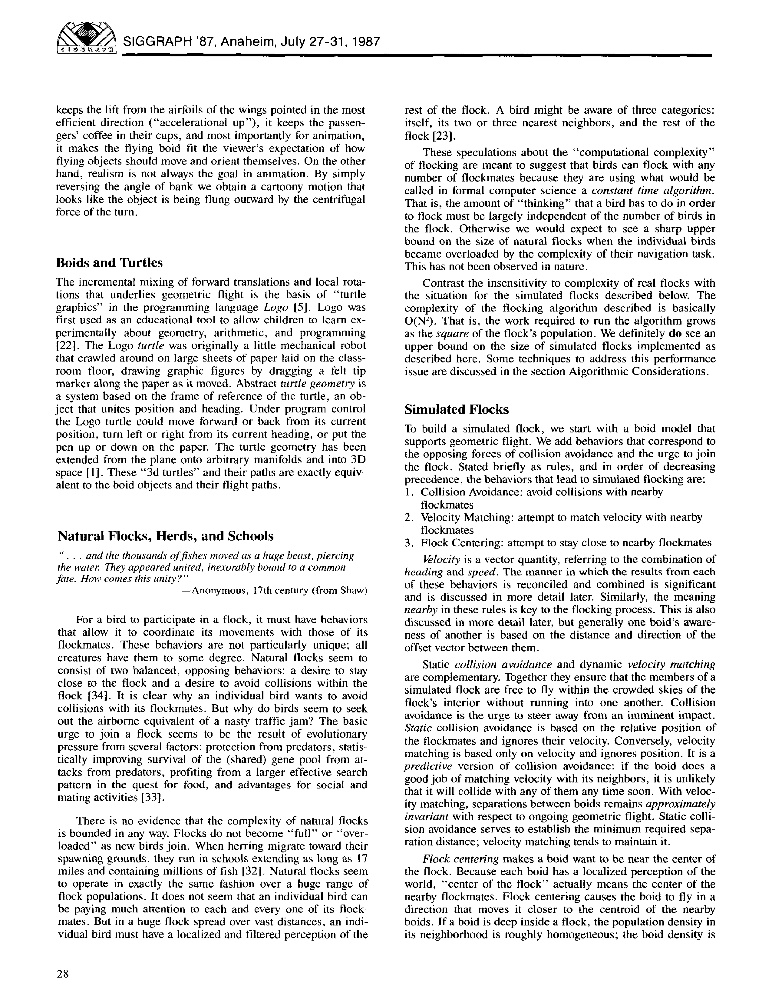
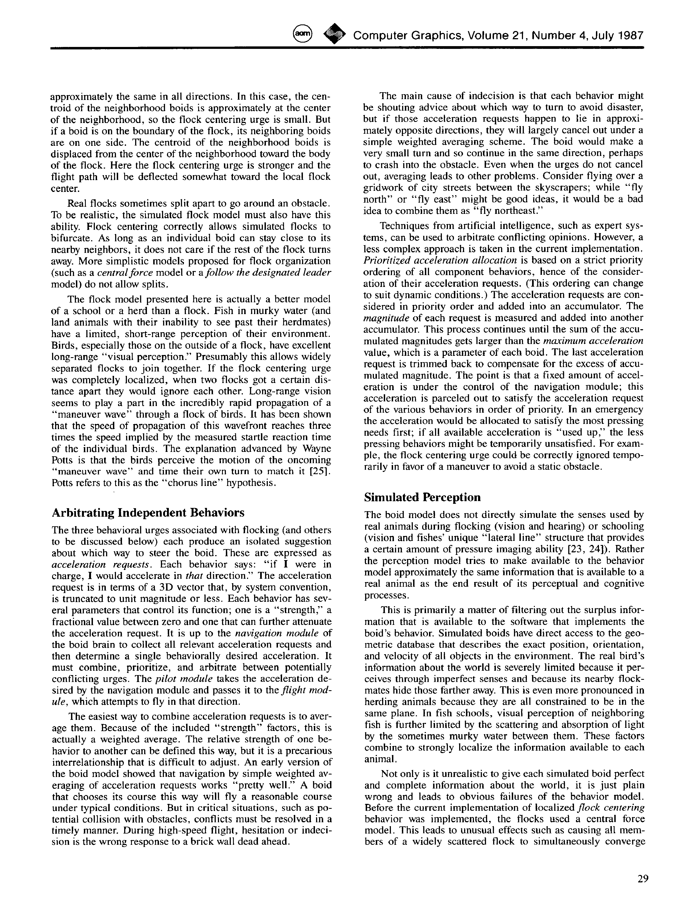
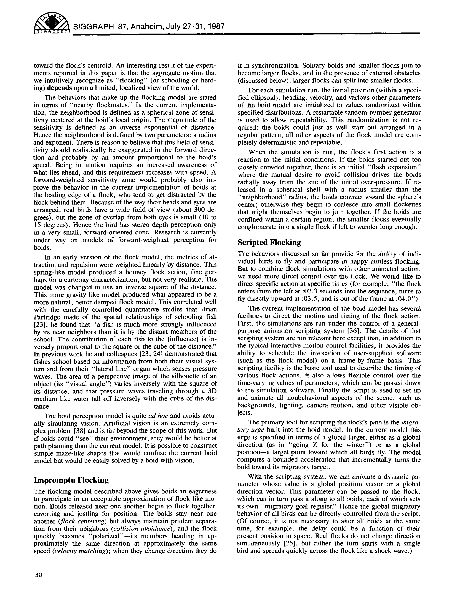
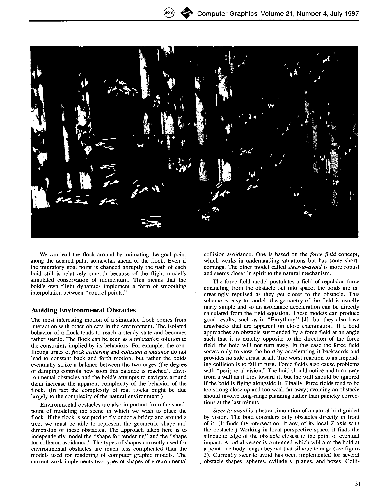
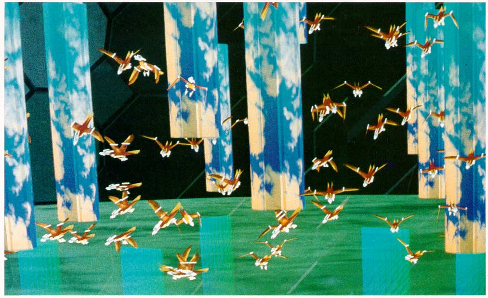
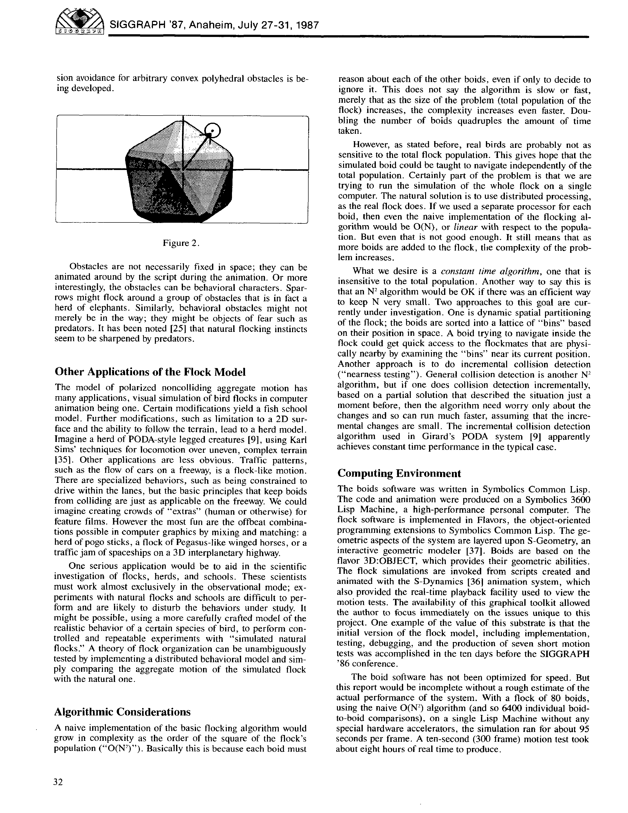
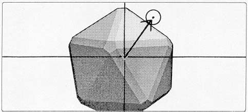
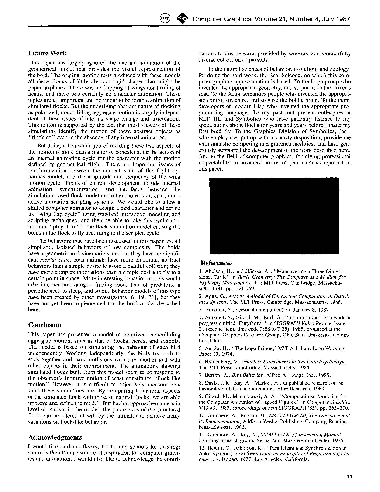
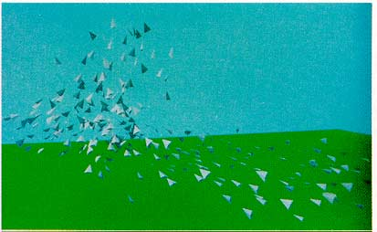
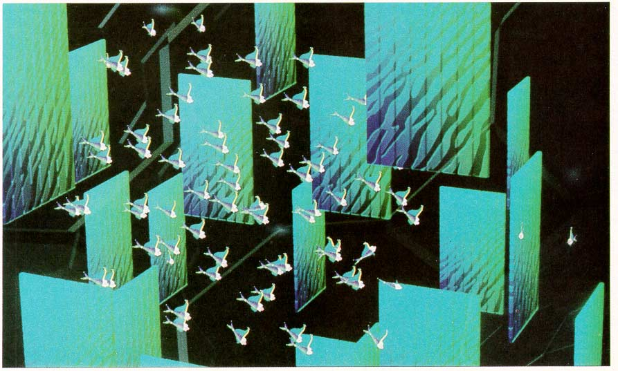
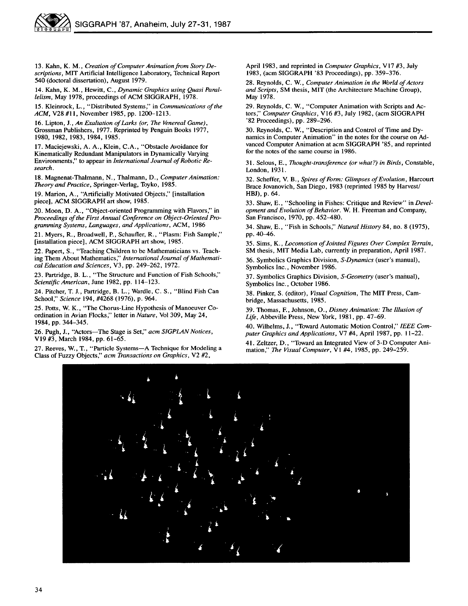